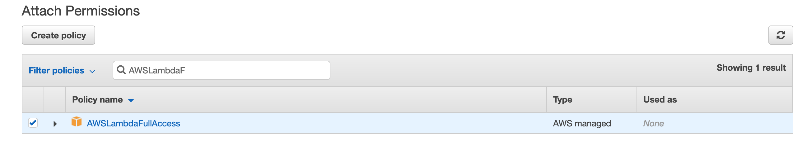
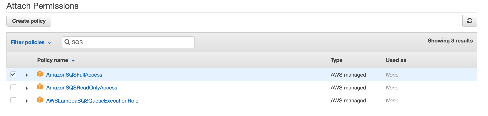

sagify

A command-line utility to train and deploy Machine Learning/Deep Learning models on AWS SageMaker in a few simple steps!

Installation
Prerequisites
sagify requires the following:
Install sagify
At the command line:
pip install sagify
Getting started
Step 1: Clone Machine Learning demo repository
You're going to clone and train a Machine Learning codebase to train a classifer for the Iris data set.
Clone repository:
git clone https://github.com/Kenza-AI/sagify-demo.git
Optionally, if you want to use Python 2.7 replace the value of REQUIRED_PYTHON and PYTHON_INTERPRETER in test_environment.py and Makefile, respectively, to python2.
Create environment:
make create_environment
Don't forget to activate the virtualenv after the creation of environment by executing workon sagify-demo.
Install dependencies:
make requirements
Step 2: Initialize sagify
sagify init
Type in sagify-demo for SageMaker app name, N in question Are you starting a new project?, src for question Type in the directory where your code lives and make sure to choose your preferred Python version, AWS profile and region. Finally, type requirements.txt in question Type in the path to requirements.txt.
A module called sagify_base is created under the src directory. The structure is:
sagify_base/
local_test/
test_dir/
input/
config/
hyperparameters.json
data/
training/
model/
output/
deploy_local.sh
train_local.sh
prediction/
__init__.py
nginx.conf
predict.py
prediction.py
predictor.py
serve
wsgi.py
training/
__init__.py
train
training.py
__init__.py
build.sh
Dockerfile
executor.sh
push.sh
Step 3: Integrate sagify
As a Data Scientist, you only need to conduct a few actions. Sagify takes care of the rest:
- Copy a subset of training data under
sagify_base/local_test/test_dir/input/data/training/to test that training works locally - Implement
train(...)function insagify_base/training/training.py - Implement
predict(...)function insagify_base/prediction/prediction.py - Optionally, specify hyperparameters in
sagify_base/local_test/test_dir/input/config/hyperparameters.json
Hence,
-
Copy
iris.datafiles fromdatatosagify_base/local_test/test_dir/input/data/training/ -
Replace the
TODOsin thetrain(...)function insagify_base/training/training.pyfile with:input_file_path = os.path.join(input_data_path, 'iris.data') clf, accuracy = training_logic(input_file_path=input_file_path) output_model_file_path = os.path.join(model_save_path, 'model.pkl') joblib.dump(clf, output_model_file_path) accuracy_report_file_path = os.path.join(model_save_path, 'report.txt') with open(accuracy_report_file_path, 'w') as _out: _out.write(str(accuracy))and at the top of the file, add:
import os from sklearn.externals import joblib from iris_training import train as training_logic -
Replace the body of
predict(...)function insagify_base/prediction/prediction.pywith:model_input = json_input['features'] prediction = ModelService.predict(model_input) return { "prediction": prediction.item() }and replace the body of
get_model()function inModelServiceclass in the same file with:if cls.model is None: from sklearn.externals import joblib cls.model = joblib.load(os.path.join(_MODEL_PATH, 'model.pkl')) return cls.model
Step 4: Build Docker image
It's time to build the Docker image that will contain the Machine Learning codebase:
sagify build
If you run docker images | grep sagify-demo in your terminal, you'll see the created Sagify-Demo image.
Step 5: Train model
Time to train the model for the Iris data set in the newly built Docker image:
sagify local train
Model file model.pkl and report file report.txt are now under sagify_base/local_test/test_dir/model/
Step 6: Deploy model
Finally, serve the model as a REST Service:
sagify local deploy
Run the following curl command on your terminal to verify that the REST Service works:
curl -X POST \
http://localhost:8080/invocations \
-H 'Cache-Control: no-cache' \
-H 'Content-Type: application/json' \
-d '{
"features":[[0.34, 0.45, 0.45, 0.3]]
}'
It will be slow in the first couple of calls as it loads the model in a lazy manner.
Voila! That's a proof that this Machine Learning model is going to be trained and deployed on AWS SageMaker successfully. Now, go to the Usage section in Sagify Docs to see how to train and deploy this Machine Learning model to AWS SageMaker!
Usage
Configure AWS Account
- Sign in to the AWS Management Console as an IAM user and open the IAM console at https://console.aws.amazon.com/iam/
- Select
Rolesfrom the list in the left-hand side, and click on Create role - Then, select SageMaker as the image shows:

- Click Next: Review on the following page:

- Type a name for the SageMaker role, and click on Create role:

- Click on the created role:

- Click on Attach policy and search for
AmazonEC2ContainerRegistryFullAccess. Attach the corresponding policy:

- Do the same to attach the
AmazonS3FullAccess,IAMReadOnlyAccess,AmazonSQSFullAccess,AWSLambdaFullAccess,AmazonEC2ContainerRegistryFullAccessandAmazonSageMakerFullAccesspolicies, and end up with the following:

-
Now, go to Users page by clicking on Users on the left-hand side.
-
Click on your IAM user that you want to use for AWS SageMaker:

- Copy the ARN of that user:

- Then, go back the page of the Role you created and click on the Trust relationships tab:

-
Click on Edit trust relationship and add the following:
{ "Version": "2012-10-17", "Statement": [ { "Sid": "", "Effect": "Allow", "Principal": { "AWS": "PASTE_THE_ARN_YOU_COPIED_EARLIER", "Service": "sagemaker.amazonaws.com" }, "Action": "sts:AssumeRole" } ] } -
You're almost there! Make sure that you have added the IAM user in your
~/.aws/credentialsfile. For example:[test-sagemaker] aws_access_key_id = ... aws_secret_access_key = ... -
And, finally, add the following in the
~/.aws/configfile:[profile test-sagemaker] region = us-east-1 <-- USE YOUR PREFERRED REGION role_arn = COPY_PASTE_THE_ARN_OF_THE_CREATED_ROLE_NOT_USER! for example: arn:aws:iam::...:role/TestSageMakerRole source_profile = test-sagemaker -
That's it! From now on, choose the created AWS profile when initializing sagify.
-
You can change the AWS profile/region in an already initialized sagify module by changing the value of
aws_profile/aws_regionin.sagify.json.
Push Docker Image to AWS ECS
If you have followed all the steps of Getting Started, run sagify push src to push the Docker image to AWS ECS. This step may take some time depending on your internet connection upload speed.
Create S3 Bucket
Make sure to create an S3 bucket with a name of your choice, for example: sagify-demo
Upload Training Data
Execute sagify cloud upload-data -i data/ -s s3://sagify-demo/training-data to upload training data to S3
Train on AWS SageMaker
Execute sagify cloud train -i s3://sagify-demo/training-data/ -o s3://sagify-demo/output/ -e ml.m4.xlarge to train the Machine Learning model on SageMaker. This command will use the pushed Docker image.
Copy the displayed Model S3 location after the command is executed (example: s3://sagify-demo/output/sagify-demo-2018-04-29-15-04-14-483/output/model.tar.gz)
Deploy on AWS SageMaker
Execute sagify cloud deploy -m s3://sagify-demo/output/.../output/model.tar.gz -n 3 -e ml.m4.xlarge to deploy the model on SageMaker.
Call SageMaker REST Endpoint
Find the endpoint URL under Endpoints in AWS SageMaker service on AWS console. Please, refer to https://docs.aws.amazon.com/apigateway/latest/developerguide/how-to-use-postman-to-call-api.html on how to call it from Postman as authorization is required.
Remember that it's a POST HTTP request with Content-Type application/json, and the request JSON body is of the form:
{
"features":[[0.34, 0.45, 0.45, 0.3]]
}
Hyperparameter Optimization
Given that you have configured your AWS Account as described in the previous section, you're now ready to perform Bayesian Hyperparameter Optimization on AWS SageMaker! The process is similar to training step.
Step 1: Define Hyperparameter Configuration File
Define the Hyperparameter Configuration File. More specifically, you need to specify in a local JSON file the ranges for the hyperparameters, the name of the objective metric and its type (i.e. Maximize or Minimize). For example:
{
"ParameterRanges": {
"CategoricalParameterRanges": [
{
"Name": "kernel",
"Values": ["linear", "rbf"]
}
],
"ContinuousParameterRanges": [
{
"MinValue": 0.001,
"MaxValue": 10,
"Name": "gamma"
}
],
"IntegerParameterRanges": [
{
"Name": "C",
"MinValue": 1,
"MaxValue": 10
}
]
},
"ObjectiveMetric": {
"Name": "Precision",
"Type": "Maximize"
}
}
Step 2: Implement Train function
Replace the TODOs in the train(...) function in sagify_base/training/training.py file with your logic. For example:
from sklearn import datasets
iris = datasets.load_iris()
# Read the hyperparameter config json file
import json
with open(hyperparams_path) as _in_file:
hyperparams_dict = json.load(_in_file)
from sklearn import svm
clf = svm.SVC(
gamma=float(hyperparams_dict['gamma']), # Values will be read as strings, so make sure to convert them to the right data type
C=float(hyperparams_dict['C']),
kernel=hyperparams_dict['kernel']
)
from sklearn.model_selection import train_test_split
X_train, X_test, y_train, y_test = train_test_split(
iris.data, iris.target, test_size=0.3, random_state=42)
clf.fit(X_train, y_train)
from sklearn.metrics import precision_score
predictions = clf.predict(X_test)
precision = precision_score(y_test, predictions, average='weighted')
# Log the objective metric name with its calculated value. In tis example is Precision.
# The objective name should be exactly the same with the one specified in the hyperparams congig json file.
# The value must be a numeric (float or int).
from sagify.api.hyperparameter_tuning import log_metric
name = "Precision"
log_metric(name, precision)
from joblib import dump
dump(clf, os.path.join(model_save_path, 'model.pkl'))
print('Training complete.')
Step 3: Build and Push Docker image
sagify buildMake sure sagify is in yourrequirements.txtfile.sagify push
Step 4: Call The CLI Command
And, finally, call the hyperparameter-optimization CLI command. For example:
sagify cloud hyperparameter-optimization -i s3://my-bucket/training-data/ -o s3://my-bucket/output/ -e ml.m4.xlarge -h local/path/to/hyperparam_ranges.json
Step 5: Monitor Progress
You can monitor the progress via the SageMaker UI console. Here is an example of a finished Hyperparameter Optimization job:

Monitor ML Models in Production
In this part, you'll integrate with Aporia in order to monitor deployed ML models. More specifically, you'll monitor:
- data drifting
- model degradation
- data integrity
Step 1: Create Aporia Account
Go to Aporia and create an account. There's a generous free tier.
Step 2: Create model at Aporia
Add your model to Aporia's console. Click the Add Model button in the Models page and name it "Iris Model"
Step 3: Initialize sagify
sagify init
Type in iris-model for SageMaker app name, y in question Are you starting a new project?, make sure to choose Python version 3 and your preferred AWS profile and region. Finally, type requirements.txt in question Type in the path to requirements.txt.
A module called sagify_base is created under the src directory. The structure is:
sagify_base/
local_test/
test_dir/
input/
config/
hyperparameters.json
data/
training/
model/
output/
deploy_local.sh
train_local.sh
prediction/
__init__.py
nginx.conf
predict.py
prediction.py
predictor.py
serve
wsgi.py
training/
__init__.py
train
training.py
__init__.py
build.sh
Dockerfile
executor.sh
push.sh
Step 4: Initialize the requirements.txt
The requirements.txt at the root of the project must have the following content:
awscli
flake8
Flask
joblib
pandas
s3transfer
sagify>=0.18.0
scikit-learn
aporia[all]
Step 5: Download Iris data set
Download the Iris data set from https://archive.ics.uci.edu/ml/machine-learning-databases/iris/iris.data and save it in a file named "iris.data" under src/sagify_base/local_test/test_dir/input/data/training/.
Step 6: Implement Training logic
Replace the TODOs in the train(...) function in src/sagify_base/training/training.py file with the following. Remember to use the model_id that Aporia gave you in step 2:
input_file_path = os.path.join(input_data_path, 'iris.data')
df = pd.read_csv(
input_file_path,
header=None,
names=['feature1', 'feature2', 'feature3', 'feature4', 'label']
)
df_train, df_test = train_test_split(df, test_size=0.3, random_state=42)
features_train_df = df_train[['feature1', 'feature2', 'feature3', 'feature4']]
labels_train_df = df_train[['label']]
features_train = features_train_df.values
labels_train = labels_train_df.values.ravel()
features_test_df = df_test[['feature1', 'feature2', 'feature3', 'feature4']]
labels_test_df = df_test[['label']]
features_test = features_test_df.values
labels_test = labels_test_df.values.ravel()
###### Report Version Schema ######
apr_model_version = 'v1'
apr_model_type = 'multiclass' # Select model type: "binary" or "regression"
###### Create a model version ######
apr_model = aporia.create_model_version(
model_id="REPLACE WITH YOUR APORIA MODEL ID",
model_version=apr_model_version,
model_type=apr_model_type,
features=aporia.pandas.infer_schema_from_dataframe(features_train_df),
predictions=aporia.pandas.infer_schema_from_dataframe(labels_train_df)
)
###### Report Training Data ######
apr_model.log_training_set(
features=features_train_df,
labels=labels_train_df
)
clf = SVC(gamma='auto')
clf.fit(features_train, labels_train)
###### Report Testing Data ######
test_predictions = clf.predict(features_test)
apr_model.log_test_set(
features=features_test_df,
labels=labels_test_df,
predictions=pd.DataFrame({'label': test_predictions})
)
accuracy = accuracy_score(labels_test, test_predictions)
output_model_file_path = os.path.join(model_save_path, 'model.pkl')
joblib.dump(clf, output_model_file_path)
accuracy_report_file_path = os.path.join(model_save_path, 'report.txt')
with open(accuracy_report_file_path, 'w') as _out:
_out.write(str(accuracy))
and at the top of the file, add:
import joblib
import os
import aporia
import pandas as pd
from sklearn.metrics import accuracy_score
from sklearn.model_selection import train_test_split
from sklearn.svm import SVC
###### Initiate Aporia ######
aporia.init(token="TOKEN PROVIDED BY APORIA", environment="YOUR CHOSEN ENV VALUE")
Step 7: Implement Prediction logic
Replace the body of predict(...) function in src/sagify_base/prediction/prediction.py with. Remember to use the model_id that Aporia gave you in step 2:
model_input = json_input['features']
prediction = ModelService.predict(model_input)
###### Report Inference ######
apr_prediction_id = str(uuid.uuid4())
apr_model = aporia.Model("REPLACE WITH YOUR APORIA MODEL ID", "v1")
apr_model.log_prediction(
id=apr_prediction_id,
features={
'feature1': model_input[0][0],
'feature2': model_input[0][1],
'feature3': model_input[0][2],
'feature4': model_input[0][3],
},
predictions={
'label': prediction.item()
},
)
apr_model.flush()
return {
"prediction": prediction.item()
}
replace the body of get_model() function in ModelService class in the same file with:
if cls.model is None:
from sklearn.externals import joblib
cls.model = joblib.load(os.path.join(_MODEL_PATH, 'model.pkl'))
return cls.model
and the top of the file must look like:
import aporia
import os
import uuid
###### Initiate Aporia ######
aporia.init(token="TOKEN PROVIDED BY APORIA", environment="YOUR CHOSEN ENV VALUE")
_MODEL_PATH = os.path.join('/opt/ml/', 'model') # Path where all your model(s) live in
Step 8: Build and Train the ML model
Run sagify build and after that sagify local train
Step 9: Call inference REST API
Run sagify local deploy and then run the following curl command to call the inference endpoint:
curl -X POST \
http://localhost:8080/invocations \
-H 'Cache-Control: no-cache' \
-H 'Content-Type: application/json' \
-d '{
"features":[[0.34, 0.45, 0.45, 0.3]]
}'
Now you should be able to see data coming in on Aporia dashboards.
Commands
Initialize
Name
Initializes a sagify module
Synopsis
sagify init
Description
This command initializes a sagify module in the directory you provide when asked after you invoke the init command.
Example
sagify init
Configure
Description
Updates an existing configuration value e.g. python version or AWS region.
Synopsis
sagify configure [--aws-region AWS_REGION] [--aws-profile AWS_PROFILE] [--image-name IMAGE_NAME] [--python-version PYTHON_VERSION]
Optional Flags
--aws-region AWS_REGION: AWS region where Docker images are pushed and SageMaker operations (train, deploy) are performed.
--aws-profile AWS_PROFILE: AWS profile to use when interacting with AWS.
--image-name IMAGE_NAME: Docker image name used when building for use with SageMaker. This shows up as an AWS ECR repository on your AWS account.
--python-version PYTHON_VERSION: Python version used when building SageMaker's Docker images. Curently supported versions: 2.7 , 3.6.
Example
sagify configure --aws-region us-east-2 --aws-profile default --image-name sage-docker-image-name --python-version 3.6
Build
Name
Builds a Docker image
Synopsis
sagify build
Description
This command builds a Docker image from code under the directory sagify is installed in. A REQUIREMENTS_FILE needs to be specified during sagify init or later via sagify configure --requirements-dir for all required dependencies to be installed in the Docker image.
Example
sagify build
Local Train
Name
Executes a Docker image in train mode
Synopsis
sagify local train
Description
This command executes a Docker image in train mode. More specifically, it executes the train(...) function in sagify_base/training/training.py inside an already built Docker image (see Build command section).
Example
sagify local train
Local Deploy
Name
Executes a Docker image in serve mode
Synopsis
sagify local deploy
Description
This command executes a Docker image in serve mode. More specifically, it runs a Flask REST app in Docker image and directs HTTP requests to /invocations endpoint. Then, the /invocations endpoint calls the predict(...) function in sagify_base/prediction/prediction.py (see Build command section on how to build a Docker image).
Example
sagify local deploy
Push
Name
Pushes a Docker image to AWS Elastic Container Service
Synopsis
sagify push [--aws-profile PROFILE_NAME] [--aws-region AWS_REGION] [--iam-role-arn IAM_ROLE] [--external-id EXTERNAL_ID]
Description
This command pushes an already built Docker image to AWS Elastic Container Service. Later on, AWS SageMaker will consume that image from AWS Elastic Container Service for train and serve mode.
Only one of iam-role-arn and aws_profile can be provided. external-id is ignored when no iam-role-arn is provided.
Optional Flags
--iam-role-arn IAM_ROLE or -i IAM_ROLE: AWS IAM role to use for pushing to ECR
--aws-region AWS_REGION or -r AWS_REGION: The AWS region to push the image to
--aws-profile PROFILE_NAME or -p PROFILE_NAME: AWS profile to use for pushing to ECR
--external-id EXTERNAL_ID or -e EXTERNAL_ID: Optional external id used when using an IAM role
Example
sagify push
Cloud Upload Data
Name
Uploads data to AWS S3
Synopsis
sagify cloud upload-data --input-dir LOCAL_INPUT_DATA_DIR --s3-dir S3_TARGET_DATA_LOCATION
Description
This command uploads content under LOCAL_INPUT_DATA_DIR to S3 under S3_TARGET_DATA_LOCATION
Required Flags
--input-dir LOCAL_INPUT_DATA_DIR or -i LOCAL_INPUT_DATA_DIR: Local input directory
--s3-dir S3_TARGET_DATA_LOCATION or -s S3_TARGET_DATA_LOCATION: S3 target location
Example
sagify cloud upload-data -i ./training_data/ -s s3://my-bucket/training-data/
Cloud Train
Name
Trains your ML/DL model using a Docker image on AWS SageMaker with input from S3
Synopsis
sagify cloud train --input-s3-dir INPUT_DATA_S3_LOCATION --output-s3-dir S3_LOCATION_TO_SAVE_OUTPUT --ec2-type EC2_TYPE [--hyperparams-file HYPERPARAMS_JSON_FILE] [--volume-size EBS_SIZE_IN_GB] [--time-out TIME_OUT_IN_SECS] [--aws-tags TAGS] [--iam-role-arn IAM_ROLE] [--external-id EXTERNAL_ID] [--base-job-name BASE_JOB_NAME] [--job-name JOB_NAME] [--metric-names COMMA_SEPARATED_METRIC_NAMES] [--use-spot-instances FLAG_TO_USE_SPOT_INSTANCES]
Description
This command retrieves a Docker image from AWS Elastic Container Service and executes it on AWS SageMaker in train mode
Required Flags
--input-s3-dir INPUT_DATA_S3_LOCATION or -i INPUT_DATA_S3_LOCATION: S3 location to input data
--output-s3-dir S3_LOCATION_TO_SAVE_OUTPUT or -o S3_LOCATION_TO_SAVE_OUTPUT: S3 location to save output (models, reports, etc). Make sure that the output bucket already exists. Any not existing key prefix will be created by sagify.
--ec2-type EC2_TYPE or -e EC2_TYPE: ec2 type. Refer to https://aws.amazon.com/sagemaker/pricing/instance-types/
Optional Flags
--hyperparams-file HYPERPARAMS_JSON_FILE or -h HYPERPARAMS_JSON_FILE: Path to hyperparams JSON file
--volume-size EBS_SIZE_IN_GB or -v EBS_SIZE_IN_GB: Size in GB of the EBS volume (default: 30)
--time-out TIME_OUT_IN_SECS or -s TIME_OUT_IN_SECS: Time-out in seconds (default: 24 * 60 * 60)
--aws-tags TAGS or -a TAGS: Tags for labeling a training job of the form tag1=value1;tag2=value2. For more, see https://docs.aws.amazon.com/sagemaker/latest/dg/API_Tag.html.
--iam-role-arn IAM_ROLE or -r IAM_ROLE: AWS IAM role to use for training with SageMaker
--external-id EXTERNAL_ID or -x EXTERNAL_ID: Optional external id used when using an IAM role
--base-job-name BASE_JOB_NAME or -n BASE_JOB_NAME: Optional prefix for the SageMaker training job
--job-name JOB_NAME: Optional name for the SageMaker training job. NOTE: if a --base-job-name is passed along with this option, it will be ignored.
--use-spot-instances FLAG_TO_USE_SPOT_INSTANCES: Optional flag that specifies whether to use SageMaker Managed Spot instances for training. It should be used only for training jobs that take less than 1 hour. More information: https://docs.aws.amazon.com/sagemaker/latest/dg/model-managed-spot-training.html (default: False).
--metric-names COMMA_SEPARATED_METRIC_NAMES: Optional comma-separated metric names for tracking performance of training jobs. Example: Precision,Recall,AUC. Then, make sure you log these metric values using the log_metric function in the train function:
```
...
from sagify.api.hyperparameter_tuning import log_metric
log_metric("Precision:, precision)
log_metric("Accuracy", accuracy)
...
```
When the training jobs finishes, they will be stored in the CloudWatch algorithm metrics logs of the SageMaker training job:

Example
sagify cloud train -i s3://my-bucket/training-data/ -o s3://my-bucket/output/ -e ml.m4.xlarge -h local/path/to/hyperparams.json -v 60 -t 86400 --metric-names Accuracy,Precision
Cloud Hyperparameter Optimization
Name
Executes a Docker image in hyperparameter-optimization mode on AWS SageMaker
Synopsis
sagify cloud hyperparameter-optimization --input-s3-dir INPUT_DATA_S3_LOCATION --output-s3-dir S3_LOCATION_TO_SAVE_MULTIPLE_TRAINED_MODELS --ec2-type EC2_TYPE [--hyperparams-config-file HYPERPARAM_RANGES_JSON_FILE] [--max-jobs MAX_NUMBER_OF_TRAINING_JOBS] [--max-parallel-jobs MAX_NUMBER_OF_PARALLEL_TRAINING_JOBS] [--volume-size EBS_SIZE_IN_GB] [--time-out TIME_OUT_IN_SECS] [--aws-tags TAGS] [--iam-role-arn IAM_ROLE] [--external-id EXTERNAL_ID] [--base-job-name BASE_JOB_NAME] [--job-name JOB_NAME] [--wait WAIT_UNTIL_HYPERPARAM_JOB_IS_FINISHED] [--use-spot-instances FLAG_TO_USE_SPOT_INSTANCES]
Description
This command retrieves a Docker image from AWS Elastic Container Service and executes it on AWS SageMaker in hyperparameter-optimization mode
Required Flags
--input-s3-dir INPUT_DATA_S3_LOCATION or -i INPUT_DATA_S3_LOCATION: S3 location to input data
--output-s3-dir S3_LOCATION_TO_SAVE_OUTPUT or -o S3_LOCATION_TO_SAVE_OUTPUT: S3 location to save output (models, reports, etc). Make sure that the output bucket already exists. Any not existing key prefix will be created by sagify.
--ec2-type EC2_TYPE or -e EC2_TYPE: ec2 type. Refer to https://aws.amazon.com/sagemaker/pricing/instance-types/
--hyperparams-config-file HYPERPARAM_RANGES_JSON_FILE or -h HYPERPARAM_RANGES_JSON_FILE: Local path to hyperparameters configuration file. Example:
{
"ParameterRanges": {
"CategoricalParameterRanges": [
{
"Name": "kernel",
"Values": ["linear", "rbf"]
}
],
"ContinuousParameterRanges": [
{
"MinValue": 0.001,
"MaxValue": 10,
"Name": "gamma"
}
],
"IntegerParameterRanges": [
{
"Name": "C",
"MinValue": 1,
"MaxValue": 10
}
]
},
"ObjectiveMetric": {
"Name": "Precision",
"Type": "Maximize"
}
}
Optional Flags
--max-jobs MAX_NUMBER_OF_TRAINING_JOBS or -m MAX_NUMBER_OF_TRAINING_JOBS: Maximum total number of training jobs to start for the hyperparameter tuning job (default: 3)
--max-parallel-jobs MAX_NUMBER_OF_PARALLEL_TRAINING_JOBS or -p MAX_NUMBER_OF_PARALLEL_TRAINING_JOBS: Maximum number of parallel training jobs to start (default: 1)
--volume-size EBS_SIZE_IN_GB or -v EBS_SIZE_IN_GB: Size in GB of the EBS volume (default: 30)
--time-out TIME_OUT_IN_SECS or -s TIME_OUT_IN_SECS: Time-out in seconds (default: 24 * 60 * 60)
--aws-tags TAGS or -a TAGS: Tags for labeling a training job of the form tag1=value1;tag2=value2. For more, see https://docs.aws.amazon.com/sagemaker/latest/dg/API_Tag.html.
--iam-role-arn IAM_ROLE or -r IAM_ROLE: AWS IAM role to use for training with SageMaker
--external-id EXTERNAL_ID or -x EXTERNAL_ID: Optional external id used when using an IAM role
--base-job-name BASE_JOB_NAME or -n BASE_JOB_NAME: Optional prefix for the SageMaker training job
--job-name JOB_NAME: Optional name for the SageMaker training job. NOTE: if a --base-job-name is passed along with this option, it will be ignored.
--wait WAIT_UNTIL_HYPERPARAM_JOB_IS_FINISHED or -w WAIT_UNTIL_HYPERPARAM_JOB_IS_FINISHED: Optional flag to wait until Hyperparameter Tuning is finished. (default: don't wait)
--use-spot-instances FLAG_TO_USE_SPOT_INSTANCES: Optional flag that specifies whether to use SageMaker Managed Spot instances for training. It should be used only for training jobs that take less than 1 hour. More information: https://docs.aws.amazon.com/sagemaker/latest/dg/model-managed-spot-training.html (default: False).
Example
sagify cloud hyperparameter-optimization -i s3://my-bucket/training-data/ -o s3://my-bucket/output/ -e ml.m4.xlarge -h local/path/to/hyperparam_ranges.json -v 60 -t 86400
Cloud Deploy
Name
Executes a Docker image in serve mode on AWS SageMaker
Synopsis
sagify cloud deploy --s3-model-location S3_LOCATION_TO_MODEL_TAR_GZ --num-instance NUMBER_OF_EC2_INSTANCES --ec2-type EC2_TYPE [--aws-tags TAGS] [--iam-role-arn IAM_ROLE] [--external-id EXTERNAL_ID] [--endpoint-name ENDPOINT_NAME]
Description
This command retrieves a Docker image from AWS Elastic Container Service and executes it on AWS SageMaker in serve mode. You can update an endpoint (model or number of instances) by specifying the endpoint-name.
Required Flags
--s3-model-location S3_LOCATION_TO_MODEL_TAR_GZ or -m S3_LOCATION_TO_MODEL_TAR_GZ: S3 location to to model tar.gz
--num-instances NUMBER_OF_EC2_INSTANCES or n NUMBER_OF_EC2_INSTANCES: Number of ec2 instances
--ec2-type EC2_TYPE or e EC2_TYPE: ec2 type. Refer to https://aws.amazon.com/sagemaker/pricing/instance-types/
Optional Flags
--aws-tags TAGS or -a TAGS: Tags for labeling a training job of the form tag1=value1;tag2=value2. For more, see https://docs.aws.amazon.com/sagemaker/latest/dg/API_Tag.html.
--iam-role-arn IAM_ROLE or -r IAM_ROLE: AWS IAM role to use for deploying with SageMaker
--external-id EXTERNAL_ID or -x EXTERNAL_ID: Optional external id used when using an IAM role
--endpoint-name ENDPOINT_NAME: Optional name for the SageMaker endpoint
Example
sagify cloud deploy -m s3://my-bucket/output/model.tar.gz -n 3 -e ml.m4.xlarge
Cloud Batch Transform
Name
Executes a Docker image in batch transform mode on AWS SageMaker, i.e. runs batch predictions on user defined S3 data
Synopsis
sagify cloud batch-transform --s3-model-location S3_LOCATION_TO_MODEL_TAR_GZ --s3-input-location S3_INPUT_LOCATION --s3-output-location S3_OUTPUT_LOCATION --num-instance NUMBER_OF_EC2_INSTANCES --ec2-type EC2_TYPE [--aws-tags TAGS] [--iam-role-arn IAM_ROLE] [--external-id EXTERNAL_ID] [--wait WAIT_UNTIL_BATCH_TRANSFORM_JOB_IS_FINISHED] [--job-name JOB_NAME]
Description
This command retrieves a Docker image from AWS Elastic Container Service and executes it on AWS SageMaker in batch transform mode, i.e. runs batch predictions on user defined S3 data. SageMaker will spin up REST container(s) and call it/them with input data(features) from a user defined S3 path.
Things to do: - You should implement the predict function that expects a JSON containing the required feature values. It's the same predict function used for deploying the model as a REST service. Example of a JSON:
{
"features": [5.1,3.5,1.4,0.2]
}
- The input S3 path should contain a file or multiple files where each line is a JSON, the same JSON format as the one expected in the predict function. Example of a file:
{"features": [5.1,3.5,1.4,0.2]}
{"features": [4.9,3.0,1.4,0.2]}
{"features": [4.7,3.2,1.3,0.2]}
{"features": [4.6,3.1,1.5,0.2]}
Required Flags
--s3-model-location S3_LOCATION_TO_MODEL_TAR_GZ or -m S3_LOCATION_TO_MODEL_TAR_GZ: S3 location to to model tar.gz
--s3-input-location S3_INPUT_LOCATION or -i S3_INPUT_LOCATION: s3 input data location
--s3-output-location S3_OUTPUT_LOCATION or -o S3_OUTPUT_LOCATION: s3 location to save predictions
--num-instances NUMBER_OF_EC2_INSTANCES or n NUMBER_OF_EC2_INSTANCES: Number of ec2 instances
--ec2-type EC2_TYPE or e EC2_TYPE: ec2 type. Refer to https://aws.amazon.com/sagemaker/pricing/instance-types/
Optional Flags
--aws-tags TAGS or -a TAGS: Tags for labeling a training job of the form tag1=value1;tag2=value2. For more, see https://docs.aws.amazon.com/sagemaker/latest/dg/API_Tag.html.
--iam-role-arn IAM_ROLE or -r IAM_ROLE: AWS IAM role to use for deploying with SageMaker
--external-id EXTERNAL_ID or -x EXTERNAL_ID: Optional external id used when using an IAM role
--wait WAIT_UNTIL_BATCH_TRANSFORM_JOB_IS_FINISHED or -w WAIT_UNTIL_BATCH_TRANSFORM_JOB_IS_FINISHED: Optional flag to wait until Batch Transform is finished. (default: don't wait)
--job-name JOB_NAME: Optional name for the SageMaker batch transform job
Example
sagify cloud batch-transform -m s3://my-bucket/output/model.tar.gz -i s3://my-bucket/input_features -o s3://my-bucket/predictions -n 3 -e ml.m4.xlarge
Cloud Create Streaming Inference
NOTE: THIS IS AN EXPERIMENTAL FEATURE
Make sure that the following 2 policies are attached to the role you created in section "Configure AWS Account":


Name
Creates streaming inference pipelines
Synopsis
sagify cloud create-streaming-inference --name WORKER_NAME --endpoint-name ENDPOINT_NAME --input-topic-name FEATURES_INPUT_TOPIC_NAME --output-topic-name PREDICTIONS_OUTPUT_TOPIC_NAME --type STREAMING_INFERENCE_TYPE
Description
This command creates a worker as a Lambda function that listens to features in the FEATURES_INPUT_TOPIC_NAME, calls the the endpoint ENDPOINT_NAME and, finally, forwards predictions to PREDICTIONS_OUTPUT_TOPIC_NAME.
Required Flags
--name WORKER_NAME: The name of the Lambda function
--endpoint-name ENDPOINT_NAME: The name of the endpoint of the deployed model
--input-topic-name FEATURES_INPUT_TOPIC_NAME: Topic name where features will be landed
--output-topic-name PREDICTIONS_OUTPUT_TOPIC_NAME: Topic name where model predictions will be forwarded
--type STREAMING_INFERENCE_TYPE: The type of streaming inference. At the moment, only SQS is supported!
Example
sagify cloud create-streaming-inference --name recommender-worker --endpoint-name my-recommender-endpoint-1 --input-topic-name features --output-topic-name model-predictions --type SQS
Cloud Delete Streaming Inference
NOTE: THIS IS AN EXPERIMENTAL FEATURE
Make sure that the following 2 policies are attached to the role you created in section "Configure AWS Account":
Name
Deletes streaming inference pipelines
Synopsis
sagify cloud delete-streaming-inference --name WORKER_NAME --input-topic-name FEATURES_INPUT_TOPIC_NAME --output-topic-name PREDICTIONS_OUTPUT_TOPIC_NAME --type STREAMING_INFERENCE_TYPE
Description
This command deletes the worker (i.e. Lambda function), input topic FEATURES_INPUT_TOPIC_NAME and output topic PREDICTIONS_OUTPUT_TOPIC_NAME.
Required Flags
--name WORKER_NAME: The name of the Lambda function
--input-topic-name FEATURES_INPUT_TOPIC_NAME: Topic name where features will be landed
--output-topic-name PREDICTIONS_OUTPUT_TOPIC_NAME: Topic name where model predictions will be forwarded
--type STREAMING_INFERENCE_TYPE: The type of streaming inference. At the moment, only SQS is supported!
Example
sagify cloud delete-streaming-inference --name recommender-worker --input-topic-name features --output-topic-name model-predictions --type SQS